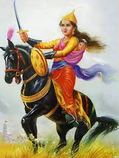

RANI LAKSHAMIBAI

Rani Lakshmibai, also known as the Queen of Jhansi, was a brave and
inspiring figure from Indian history. Born in 1828, she grew up to be
a fearless warrior and a symbol of resistance against British rule in
India. Rani Lakshmibai was known for her courage, intelligence, and
love for her country.

At a young age, Rani Lakshmibai was trained in sword fighting, horseback
riding, and archery, making her a skilled warrior. When her husband, the
Maharaja of Jhansi, passed away, the British East India Company tried to
annex Jhansi under the doctrine of lapse. However, Rani Lakshmibai
refused to surrender her kingdom and led her troops into battle against
the British.
Despite facing overwhelming odds, Rani Lakshmibai fought valiantly to
defend Jhansi. She became a symbol of Indian resistance against
British rule, inspiring many to join the fight for independence.
Though she ultimately lost her life in battle, her legacy lives on as
a symbol of courage, patriotism, and the fight for freedom.